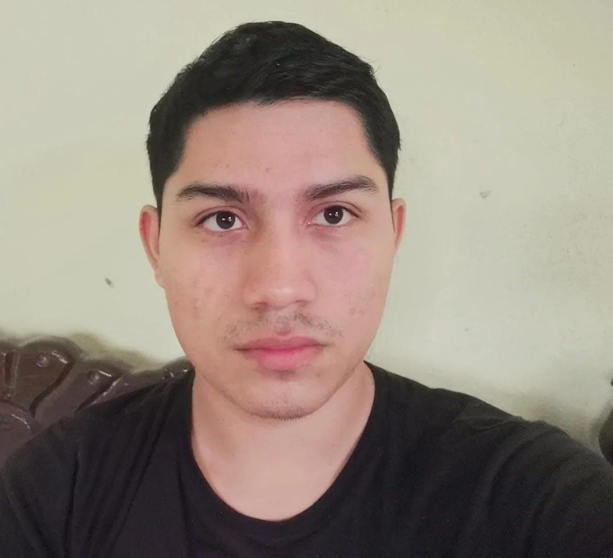

Julio Cesar Rodriguez Gonzalez
Mi nombre es Julio Cesar Rodríguez Gonzalez, pero la mayoría me conoce por cesar, Nací el 02 de mayo del 2001 en Villahermosa, Tabasco. Mis padres son Sr. Julián Rodriguez Gonzalez es soldado, tiene 54 años y Sra. Andrea Gonzalez Jauregui es ama de casa, tiene 45 años. Soy el tercero de cuartos hermanos. En la actualidad estoy estudiando la universidad anterior mente estuve estudiando el bachillerato en el plantel N.6 a la cual casi no pude tener algún reconocimiento solo recuerdo tener el primer lugar en diseño digital, Estuve en la primaria San Felipe Carrillo Puerto.
Un ámbito que me gusta es hacer diseño digital y me gustaría aprender como diseñar animación en 3D. También me gustaría aprender más de programación en aplicaciones solo que no me ha dado tiempo de practicar más a fondo sobre eso. Estuve trabajando con una tienda de negocios en hacerle una página web y cual no fue tan complicado tampoco era un trabajo fijo.
Al principio no me estaba agrado mi carrera por que siento que no era para mí y realmente no era algo que yo quería, pero aprendido a tenerle cariño me esta empenzado gustar algunas cosas como programar en algunos lenguajes de programación como java, c, c++ y PHP aun que siento que se me dificultan porque a veces no lo practico, Por el momento quiero terminar mi carrera y aprender más a lo que a mí me gusta como diseñar, animaciones y etc.
Quiero seguir estudiando me gustaría meter a estudiar Lic. En Arquitectura o Diseño digital en 3D. Al parecer soy bueno en la asignatura de Dase de datos, Programación Web y Contabilidad. Realmente no pensaba trabajar en base a la carrera que estoy estudiando, pero como en aprendido algunas cosas pues quiero trabajar en una empresa en Administración en Dase de datos, Quiero aprender muchas cosas, una cosa que se me olvido comentar me encanta la fotografía quiero salir de viaje a otros lugares, quiero tener un tiempo para mí, Creo en largo plazo quiero ejercer lo que estudie de la carrera, pero realmente tener una mini empresa.
